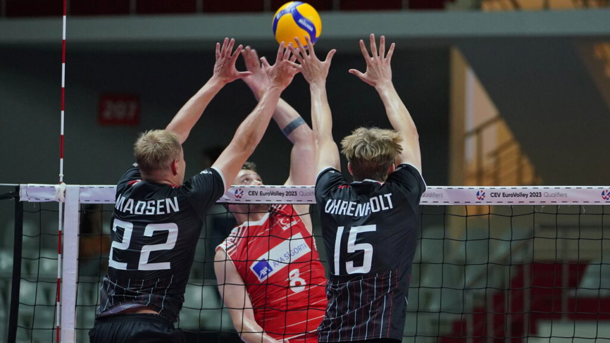

O voleibol foi criado em 1895 nos Estados Unidos pelo professor de educação física William G. Morgan. Ele buscava um esporte de quadra fechada que não exigisse contato físico, reduzindo assim o risco de lesões. Originalmente chamada de Mintonette, a modalidade rapidamente se expandiu pelo mundo.
Nos primeiros anos, o esporte não tinha limite de toques na bola nem de jogadores em quadra. Com o passar das décadas, o vôlei se profissionalizou:
| 1912 | Introdução da rotação (rodízio) dos jogadores em quadra. |
|---|---|
| 1916 | O passe e a cortada começaram a ser desenvolvidos nas Filipinas. |
| 1920 | Definição do limite máximo de três toques por equipe. |
| 1947 | Fundação da Federação Internacional de Voleibol (FIVB) em Paris. |
| 1964 | O vôlei estreou oficialmente nos Jogos Olímpicos de Tóquio. |
| 1998 | Introdução da posição do Líbero para aumentar as defesas. |
